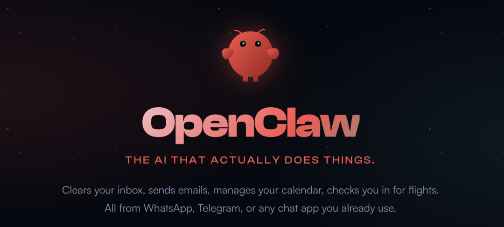
OpenClaw 这个小龙虾智能体实在是太火了。
我知道很多朋友已经按捺不住了，特别想在自己的电脑上装起来亲自试一试。不过说实话，第一次接触 OpenClaw，还是很容易被各种环境配置和复杂步骤劝退。
所以我打算写一组 OpenClaw 入门系列文章，而你现在看到的这篇，就是第一篇。这篇文章我会尽量站在完全新手的角度来写，假设你之前几乎没接触过类似工具，从 0 开始一步一步带你上手，主要帮你解决三个问题：
顺利把 OpenClaw 安装好，不在前期卡壳 通过 Telegram / WhatsApp 和 OpenClaw 实现随时随地的交流 初步了解 OpenClaw 究竟能干什么
如果你之前看教程总是看到一半就放弃，希望这套入门指南能让你轻松跑通第一步。
接下来，我们就从最基础的准备工作开始。
Part 1 安装前的准备工作
为了让你顺利安装和运行 OpenClaw，有几个前提条件必须提前准备好。如果这几项都准备好了，后面的安装和使用过程会非常顺畅。其实大多数新手遇到的问题，往往都出在这些基础准备上。
一、硬件设备：准备一台 Mac 电脑
首先，你需要一台 Mac 电脑。无论是 Mac mini 还是 MacBook 都可以。
如果你用的是 Mac mini，它非常适合作为一台长期运行的 AI 主机，可以放在家里 24 小时稳定工作，这也是我个人推荐的方案。
如果你是初学者，直接用自己的 MacBook 也完全没问题，但注意不要给 OpenClaw 太多的权限。这一阶段不用纠结性能配置，普通的 Apple 芯片机型基本都够用。
二、AI 模型：准备好 OpenClaw 调用的 AI 模型
OpenClaw 是一个调度和执行系统，真正负责“思考”和“写代码”的，是它背后调用的 AI 模型。
目前来看，效果最好的还是海外这三大模型：
Claude 4.6 Opus GPT 5.3 Codex Gemini 3 Pro
如果你已经是这些服务的订阅用户，建议提前把对应的命令行工具安装好，比如 Claude Code、Codex 或 Gemini CLI。这样接入 OpenClaw 会非常顺滑。
如果你暂时没有海外模型的订阅，国内模型同样可以用，而且性价比很高。我比较推荐这三个：
智谱 GLM-4.7 MiniMax M2.1 月之暗面 Kimi 2.5
你可以在各自官网购买套餐，一个月大概几十块人民币，对新手来说非常友好。
因为我已经在用 GLM-4.7 的 Coding Plan 套餐，所以接下来的新手演示我会以 GLM-4.7 为例来讲。如果你选择 MiniMax 或 Kimi 2.5，整体流程基本是一样的，可以放心跟着操作。
另外，如果你已经订阅了 GitHub Copilot 也可以直接用，它里面同样包含 GPT、Gemini 和 Claude 的基础模型能力。
我以 智谱的 GLM-4.7 为例，购买套餐以后，登录后台，创建一个 API Key，然后复制保存好。
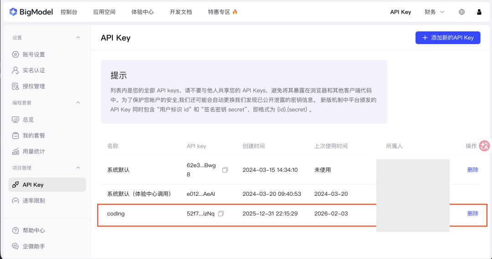
三、通讯软件：选择一个与 OpenClaw 交流的渠道
我们和 OpenClaw 交流，并不像 ChatGPT 那样通过网页，也不像 Claude Code 那样通过命令行，而是通过聊天工具，像给自己的 AI 管家下命令一样去管理她。
我个人推荐使用 Telegram。它简单而且强大，在手机上使用非常方便，后面的演示我也会统一用 Telegram 来讲解。除了 Telegram 之外，还有几种选择：
WhatsApp：接入最简单，适合轻量使用，但不要大量发消息，容易触发封号 Discord：更偏工程化，功能强大，但更复杂，适合进阶用户 飞书：国内用户可以用，但流程比较复杂，本文暂不展开，后续我会单独写一篇详细介绍
讲解 Telegram 配置之外，我后面还会教大家 WhatsApp 配置。如果你不熟悉 Telegram，也可以换成 WhatsApp。
Part 2 软件的安装
在正式安装 OpenClaw 之前，我们需要先把运行环境准备好。最后就可以一个命令成功安装OpenClaw，总共四步：
安装 Homebrew 用 Homebrew 安装 fnm 用 fnm 安装 Node.js 用 Node.js 安装 OpenClaw
Homebrew → fnm → Node.js → OpenClaw， 只要顺着这个顺序来，基本不会出问题。
第一步：安装 Homebrew
严格来说，运行 OpenClaw 并不是必须依赖 Homebrew。
但在实际使用过程中，OpenClaw 会调用大量的 Skill，而很多 Skill 都需要安装各种命令行工具。这些工具如果手动安装，很容易出错。
Homebrew 相当于 macOS 上的统一软件管理器，可以帮你快速、稳定地安装这些依赖。为了避免后期反复踩坑，建议一开始就把 Homebrew 装好。
打开 终端（按 Command + Space，搜索 “终端” 或 “Terminal” 打开） 复制下面整行命令，粘贴到终端里面，按回车执行：
/bin/bash -c "$(curl -fsSL https://raw.githubusercontent.com/Homebrew/install/HEAD/install.sh)"
执行过程中会让你输入你的macOS登录密码，然后继续 安装完后，终端会提示一些“Next steps”（如添加 brew 到 PATH）。直接复制命令粘贴执行（通常是下面两行）：
echo >> ~/.zprofile
echo 'eval "$(/opt/homebrew/bin/brew shellenv)"' >> ~/.zprofile
eval "$(/opt/homebrew/bin/brew shellenv)"
验证 Homebrew 是否成功，在命令行终端里面：
brew -v
当你看到
Homebrew 5.0.13
类似的信息，恭喜你，Homebrew安装成功，你已经距离成功前进一大步！
第二步：使用 Homebrew 安装 fnm
fnm 是一个 Node.js 版本管理工具。OpenClaw 运行在 Node.js 环境中，而 Node.js 的版本非常多，目前官方推荐使用 v22。通过 fnm 来管理 Node.js，可以方便切换版本，避免环境冲突，升级和回退也更安全。所以正确的顺序是：先装 fnm，再用 fnm 安装 Node.js。
在终端执行
brew install fnm
激活 fnm（让终端认识它）
echo 'eval "$(fnm env --use-on-cd)"' >> ~/.zshrc
source ~/.zshrc
验证 fnm
fnm --version
当你看到
fnm 1.38.1
类似的信息，恭喜你，fnm 安装成功，你就快要成功了！
第三步：用 fnm 安装 Node.js
OpenClaw 官方推荐使用 Node.js 22。所以我们用 fnm 来安装 Node.js 22 。
在终端执行如下命令，你可以直接粘贴：
fnm install 22
fnm use 22
fnm default 22
验证 Node.js 是否安装好了：
node -v
npm -v
如果你看到 node 的信息类似：
v22.22.0
而 npm 的信息类似：
10.9.4
恭喜你，你只差最后一步了！
第四步：用 Node.js 安装 OpenClaw
非常简单，使用 Node.js 的包管理工具 npm 命令，一行即可完成安装。
npm i -g openclaw
到这里，整个软件环境准备和 OpenClaw 的安装过程就完成了。
中间碰到任何问题，如果你不知道怎么解决，可以把错误信息粘贴到你最常用的 AI 聊天窗口，让 AI教你。不过，如果你严格按照我的步骤走下来，不会出问题。
Part 3 申请 Telegram 机器人的 Token
因为我们使用 Telegram 和 OpenClaw 进行交流，需要预先申请一个 Telegram 机器人的 Token。这是一个非常简单的“对话式”申请过程，你可以直接在手机或电脑端操作：
第一步：找到 BotFather
打开 Telegram，在顶部的搜索栏输入： @BotFather。认准那个带蓝色认证对勾的官方账号。 点击底部的 Open 按钮。
第二步：创建新机器人
在弹窗的窗口中点击：“Create a New Bot” 设置显示名称： 比如你可以设置 RobbinOpenClaw。这是别人在聊天列表中看到的名字。**设置 ID (Username)**： 注意：这个 ID 必须以 bot结尾，且不能和别人的重复。比如： robbin_openclaw_bot。在弹窗的窗口中，可以看到生成好的 token，下面有 “Copy” 按钮。点击 Copy，复制下来。 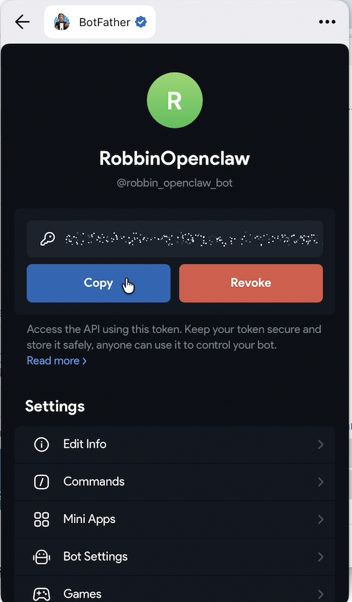
Part 4 配置并且运行 OpenClaw
好，现在请你深吸一口气。我们前面所有的工作都不是浪费的，因为接下来你就可以一步成功了。
第一步：启动配置面板
在终端输入以下命令进入交互式配置界面：
openclaw onboard
程序启动后，你会看到一个终端 UI 界面。可以一路无脑选择： yes。
第二步：配置 LLM 模型 (GLM-4.7)
进入模型设置：在菜单中选择 Model Settings。选择提供商：找到并选择 Zhipu或者Z.A。填写 API Key：将你的 GLM 4.7 的 API Key 粘贴进去。 指定模型名称：在 Model Name一栏填入glm-4.7。保存：点击页面下方的 Save或按提示保存。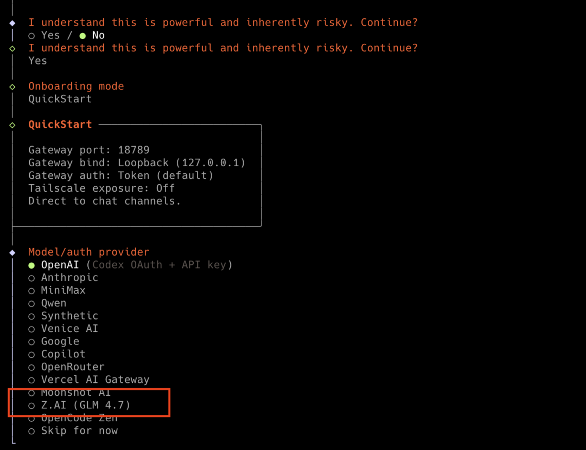
第三步：配置 Channel 通讯渠道 (Telegram)
进入渠道设置： 选择 Telegram Bot。 填写 Token：在 Bot Token字段中填入你从@BotFather那里拿到的长字符串 Bot Token。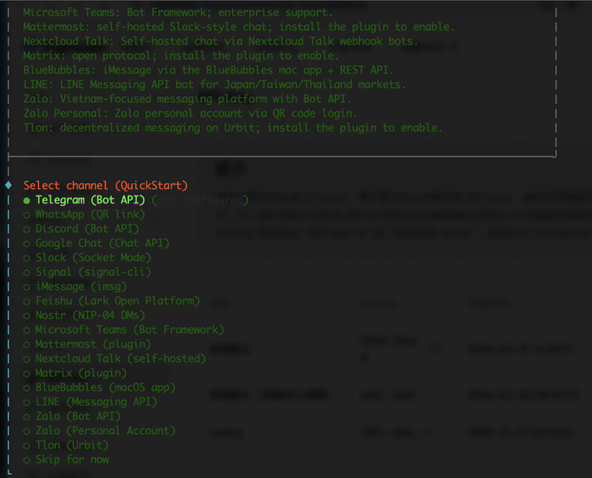
第四步：保存并运行
在配置完成 Channel 之后，还会选择问你安装哪些 Skills， 这一步我们可以跳过，后面在 Web 管理控制台安装。基本上就是一路跳过或者默认就行了。最后就结束了安装，此时，你可以选择打开 Web UI 浏览器，就可以访问 OpenClaw 的管理控制台，它长的类似这样：
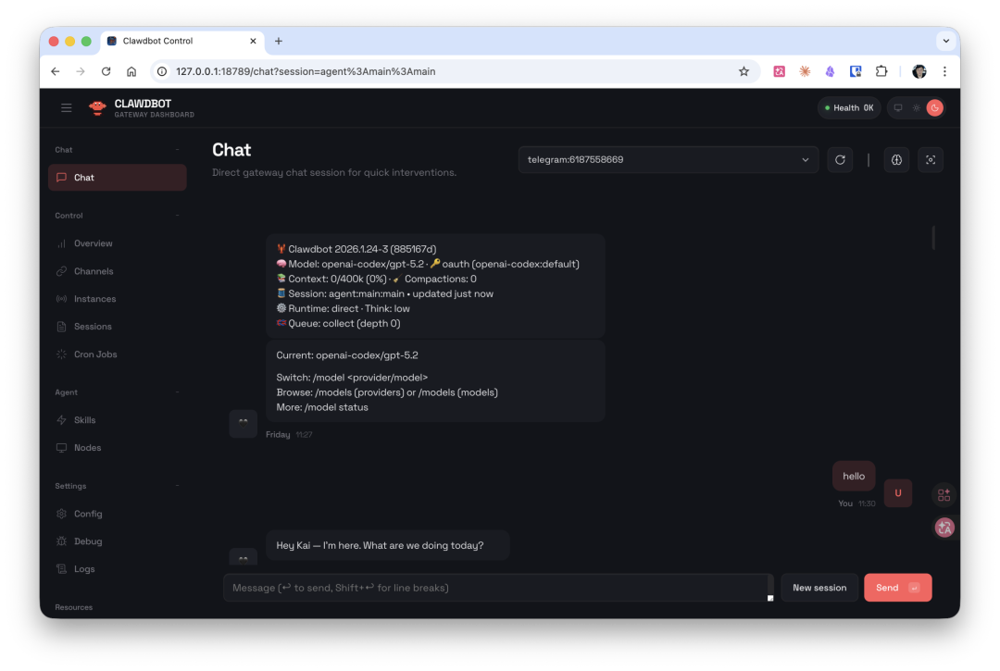
后面你想要配置和管理 OpenClaw 都可以通过这个Web管理控制台。
第五步：验证连接
最后让我们把 Telegram 和 OpenClaw 的交流渠道彻底打通：
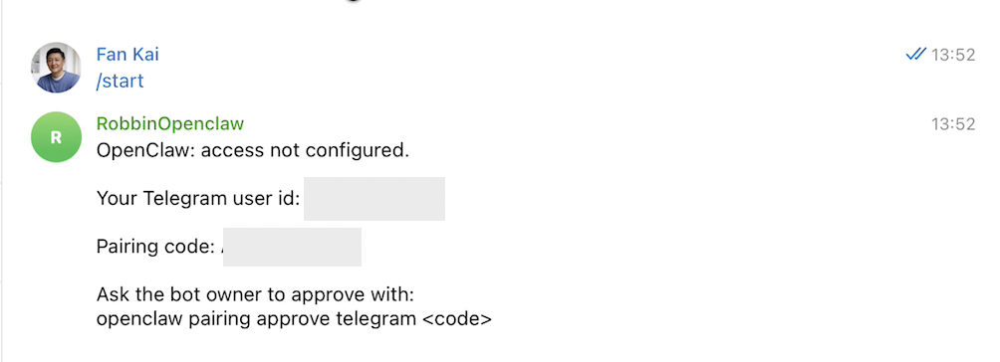
打开你的 Telegram，搜索到你刚才创建的机器人，例如 robbin_openclaw_bot。发送一条消息： /start或者你好。Bot 会回复一个配对码（例如： PAIR-ABC123）回到终端 OpenClaw 窗口，运行命令来批准绑定 Telegram
openclaw pairing approve telegram PAIR-ABC123 # 使用你的配对码
当你在终端看到如下的信息显示：
Approved telegram sender 123456789
🎉 恭喜你，你已经成功安装、运行 OpenClaw，接下来你只需要通过 Telegram 就可以完全操控你的 AI 智能管家了。
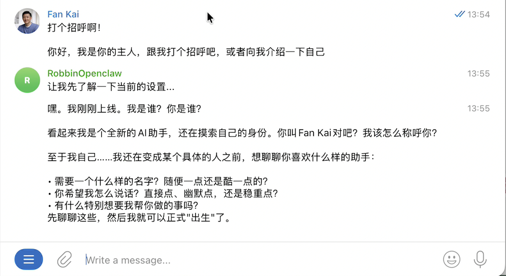
这个时候你可以跟你的机器人智能管家多聊几句，向她介绍你自己。你也可以给你的机器人起个名字，并为她设定一些性格。她会把这些信息写入到存储里面。
第六步 配置 WhatsApp
有些朋友没有 Telegram，但有 WhatsApp，在这里手把手教大家如何配置 WhatsApp。相对来说，WhatsApp 的配置过程比较简单，但功能没有 Telegram 那么强大。
打开终端窗口，手动输入配置命令
openclaw configure
在配置界面中选择 channels（通道），然后选择 WhatsApp此时系统会生成一个二维码。用手机打开 WhatsApp，扫描这个二维码 扫描后在手机上确认"关联一个新设备"，就链接成功了。手机上会显示你关联了一个 Chrome 浏览器——因为 OpenClaw 模拟的是用浏览器登录 了你的 WhatsApp。 在 OpenClaw 里面填写你的手机号码： +86 加你的手机号，完成后显示 linked（已连接）即可退出。现在，你就可以在手机上用 WhatsApp 与 OpenClaw 互动了。 WhatsApp 里用自己的手机号搜索到自己，然后给自己发消息，OpenClaw 就会自动回复你。 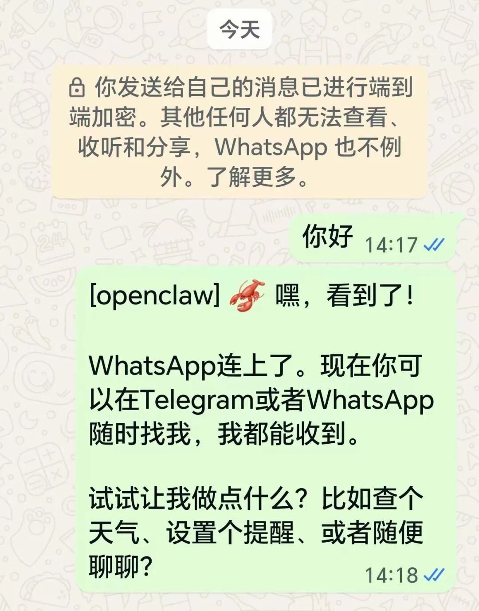
Part 5 我可以用 OpenClaw 来干什么
我看很多人安装 OpenClaw 之后，不知道用它来干啥。说实话，现在真正拖慢我们的，并不是工具本身，而是想象力。这篇内容主要还是围绕新手如何安装和上手展开，所以这里我不会展开讲所有应用场景，只快速抛三个已经可以实现的案例，先帮你打开一点想象空间。
让 OpenClaw 接管你的日程和备忘录
以前你要在苹果备忘录里一条条记碎片信息，记多了以后基本很难整理。日程提醒也要打开日历 App 手工输入，一个个设置。现在有了 OpenClaw，这套操作可以直接消失。
你只需要在 Telegram 里对它说话。任何碎片想法，直接说一句： “帮我记到苹果备忘录里。”
任何日程安排，直接口述时间和提醒： “明天下午三点开会，提前一小时提醒我，写进苹果日历。”
例如，我每周日晚上 10 点会有一场 “范凯说 AI 周日晚聊”的直播，那么我就可以直接告诉 Openclaw，她会帮我创建一个循环日历，每个周末晚上10点直播的事件。
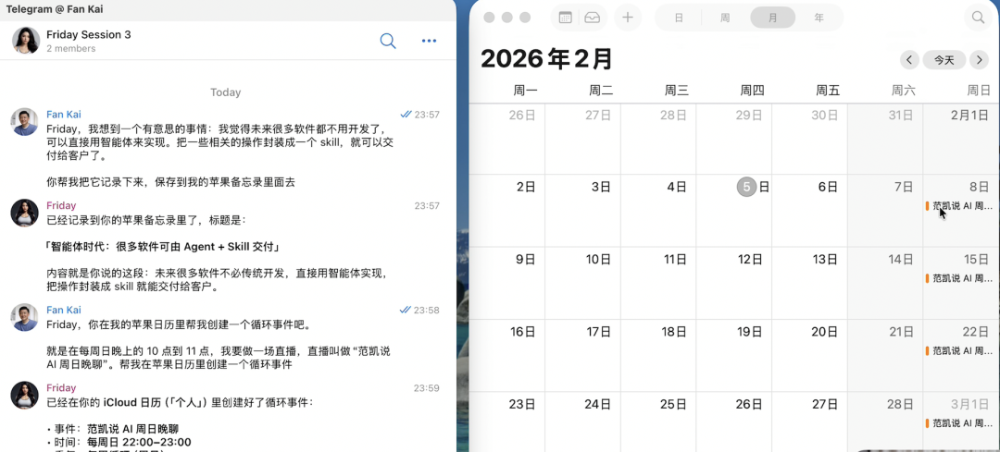
更厉害的是，它会把你的日程和备忘录彻底重构成一个知识库。你只需要和 Telegram 对话。所有软件操作，全部由 OpenClaw 在后台完成。
让 OpenClaw 做真正的知识管理
过去我们用 Evernote、语雀这类工具，本质上都是在存文件。内容存进去以后，目录结构、分类逻辑、标签体系，全靠自己维护。时间一长，笔记越多，结构越复杂，维护成本越高，最后反而越来越难用。
而知识本来就不是树状的，而是网状的。有了 OpenClaw 之后，你不再需要纠结目录和分类。你可以把所有笔记直接交给它，它会自动读一遍、重构结构、建立关联，把碎片内容整理成一个真正网状的知识库。
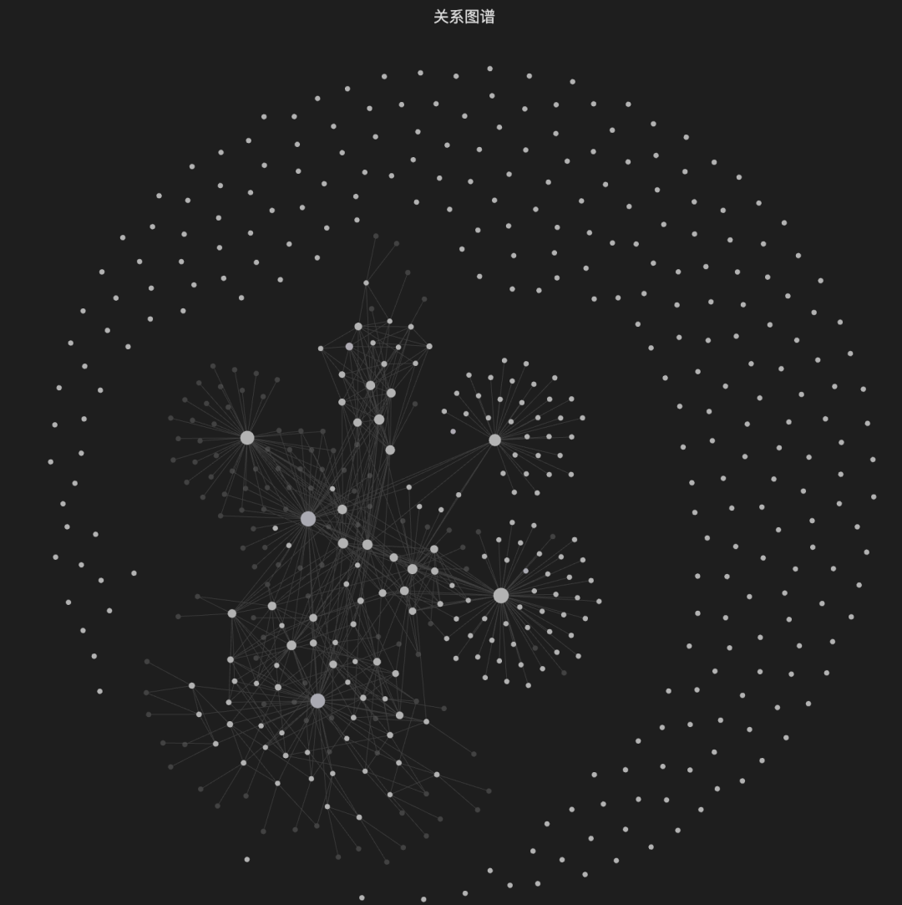
更重要的是，你不再“翻笔记”。你只需要在 Telegram 里直接问，它就会到知识库里帮你提取、组合、甚至生成新的内容并自动维护结构。
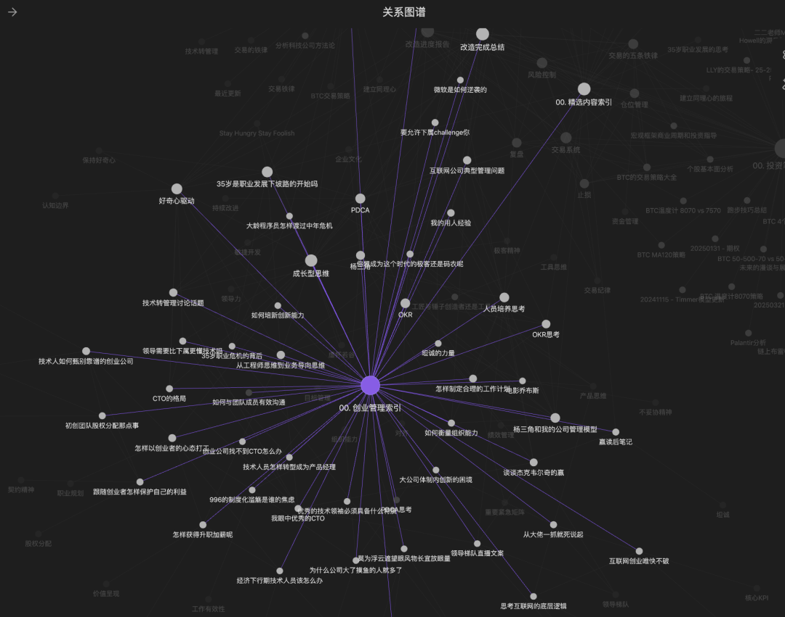
从这一刻开始，知识不再是存档，而是一个会持续进化的系统。
给 OpenClaw 一个真实的数字人身份
我把一台安卓手机打开 USB 调试，用一根 Type-C 线接到 Mac mini 上。接下来发生的事情直接把我震住了。OpenClaw 真的可以控制这台手机。
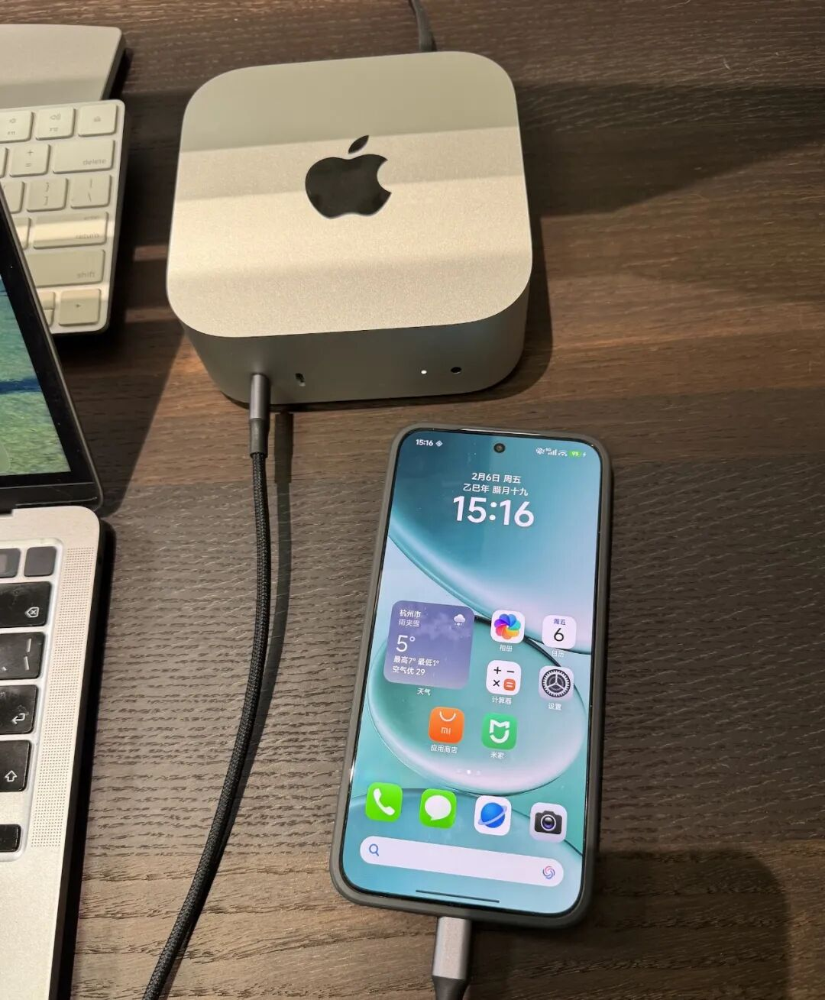
它能发微信、打电话、收发短信，虽然速度还有点慢，但整个流程是完全跑通的。那一刻我脑子里只有一个念头：这已经不是玩具了。
我马上就去淘宝下单了一台红米手机，给她专用，再给它配一张 SIM 卡。让它自己注册账号、收验证码、加群、和这个世界发生真实交互。从这一刻开始，OpenClaw 不再只是一个程序。它开始拥有一个真实的数字身份。
你再往后想一步，会发现几乎没有什么事情是它做不到的。
Part 6 限制我们的是想象力
到这里，你已经完成了从安装到上手的整个过程，也初步看到了 OpenClaw 能够打开的巨大空间。它已经不只是一个工具，而是在朝着每个人身边的“个人 AI 管家”快速进化。很多人现在觉得智能体还在早期阶段，但现实是，真正限制我们的早就不是技术能力。模型已经足够强大，自动化流程已经跑通，真实设备也已经可以被 AI 接管。
现在缺的，只剩下想象力和使用方式。
接下来，我会围绕 OpenClaw 持续更新一系列实战内容，带你一步步把智能体真正落地到工作与生活中。从效率跃迁，到知识系统重构，再到个人 AI 操作系统的构建，最终帮助你在 AI 时代完成转型，打造属于自己的长期竞争力。
如果你对这些方向感兴趣，欢迎持续关注我：
范凯说 AI
我们一起，把 AI 的潜力彻底释放出来。
关于本文章的所有操作演示视频，请看“范凯说 AI”视频号